<title>Catálogo 3D Touch</title>
<meta name="description" content="As máquinas Snapmaker, xTool e Bambu Lab que a 3D Touch representa no Brasil.">
<link rel="icon" href="img/favicon.png" type="image/png">
<link rel="apple-touch-icon" href="img/apple-touch-icon.png">
<meta name="theme-color" content="#FFFFFF">
<meta property="og:type" content="website">
<meta property="og:title" content="Catálogo 3D Touch">
<meta property="og:description" content="As máquinas Snapmaker, xTool e Bambu Lab que a 3D Touch representa no Brasil.">
<meta property="og:url" content="https://catalogo-3dtouch.vercel.app">
<meta property="og:image" content="https://catalogo-3dtouch.vercel.app/img/og.jpg">
<meta name="twitter:card" content="summary_large_image">
<link rel="preconnect" href="https://fonts.googleapis.com">
<link rel="preconnect" href="https://fonts.gstatic.com" crossorigin>
<link rel="stylesheet" href="https://fonts.googleapis.com/css2?family=Archivo:wdth,wght@62..125,400..800&family=IBM+Plex+Mono:wght@400;500&family=Instrument+Sans:wght@400..700&display=swap">

<style>
/* ---------------------------------------------------------------
   Catálogo 3D Touch
   Paleta e gradiente tirados do folder impresso (FOLDER FRENTE).
   Tema único claro, de propósito: o folder é branco e as logos das
   marcas são pretas. Toda cor é pintada explicitamente.
   --------------------------------------------------------------- */
:root{
  --ground:#FFFFFF;
  --surface:#F6F4F8;
  --surface-2:#EDE9F1;
  --ink:#14121A;
  --ink-2:#565064;
  --ink-3:#8D879A;
  --line:#E4DFEA;

  --snap:#47318D;
  --xtool:#C43C70;
  --bambu:#F37040;
  --grad:linear-gradient(90deg,#47318D 0%,#973086 26%,#C43C70 52%,#EE5755 78%,#F37040 100%);

  --display:"Archivo","Arial Narrow",Arial,sans-serif;
  --body:"Instrument Sans","Helvetica Neue",Arial,sans-serif;
  --mono:"IBM Plex Mono",ui-monospace,"Courier New",monospace;

  --pad:clamp(18px,4.5vw,56px);
  --maxw:1180px;
}

*,*::before,*::after{box-sizing:border-box}
html{-webkit-text-size-adjust:100%;scroll-behavior:smooth}
@media (prefers-reduced-motion:reduce){html{scroll-behavior:auto}}
body{
  margin:0;
  background:var(--ground);
  color:var(--ink);
  font-family:var(--body);
  font-size:16px;
  line-height:1.55;
  -webkit-font-smoothing:antialiased;
}
img{max-width:100%;height:auto;display:block}
figure{margin:0}
a{color:inherit}
:focus-visible{outline:2px solid var(--xtool);outline-offset:3px;border-radius:4px}

.wrap{max-width:var(--maxw);margin-inline:auto;padding-inline:var(--pad)}

/* eyebrow / rótulos utilitários -------------------------------- */
.eyebrow{
  font-family:var(--mono);
  font-size:11px;
  letter-spacing:.16em;
  text-transform:uppercase;
  color:var(--ink-3);
  margin:0;
}

/* ---------------- barra fixa ---------------- */
.topbar{
  position:sticky;top:0;z-index:40;
  background:rgba(255,255,255,.94);
  backdrop-filter:saturate(1.6) blur(10px);
  border-bottom:1px solid var(--line);
}
.topbar__rule{height:3px;background:var(--grad)}
.topbar__in{
  display:flex;align-items:center;gap:14px;
  min-height:56px;
  flex-wrap:wrap;
  padding-block:8px;
}
.topbar__marks{display:flex;align-items:center;gap:12px;flex:0 0 auto}
.topbar__marks img{height:20px;width:auto}
.topbar__marks .sep{width:1px;height:20px;background:var(--line)}
.topbar__rotulo{
  font-family:var(--mono);font-size:11px;letter-spacing:.14em;
  text-transform:uppercase;color:var(--ink-3);white-space:nowrap;
}

.brandnav{
  display:flex;gap:6px;
  overflow-x:auto;
  scrollbar-width:none;
  -ms-overflow-style:none;
  flex:1 1 100%;
  padding-bottom:2px;
}
@media (min-width:640px){
  .brandnav{flex:0 0 auto;margin-left:auto;padding-bottom:0}
  .topbar__in{flex-wrap:nowrap;padding-block:0}
}
.brandnav::-webkit-scrollbar{display:none}
.brandnav a{
  flex:0 0 auto;
  display:inline-flex;align-items:center;gap:7px;
  padding:6px 12px;border-radius:999px;
  border:1px solid var(--line);
  font-size:13px;font-weight:600;text-decoration:none;
  color:var(--ink-2);
  white-space:nowrap;
  transition:background .18s,color .18s,border-color .18s;
}
.brandnav a::before{
  content:"";width:7px;height:7px;border-radius:50%;
  background:var(--dot,var(--ink-3));
}
.brandnav a:hover{background:var(--surface);color:var(--ink)}
.brandnav a[aria-current="true"]{
  background:var(--ink);color:#fff;border-color:var(--ink);
}

/* ---------------- topo ---------------- */
.hero{padding:clamp(40px,8vw,84px) 0 clamp(28px,5vw,44px)}
.hero h1{
  font-family:var(--display);
  font-variation-settings:"wdth" 108,"wght" 780;
  font-size:clamp(38px,8.4vw,80px);
  line-height:.95;
  letter-spacing:-.025em;
  text-wrap:balance;
  margin:14px 0 0;
}
.hero h1 em{
  font-style:normal;
  background:var(--grad);
  -webkit-background-clip:text;background-clip:text;
  color:transparent;
}
.hero__lead{
  max-width:60ch;
  font-size:clamp(16px,2.4vw,19px);
  color:var(--ink-2);
  margin:18px 0 0;
}
.tally{
  display:flex;flex-wrap:wrap;gap:10px;
  margin:26px 0 0;padding:0;list-style:none;
}
.tally li{
  font-family:var(--mono);font-size:12px;letter-spacing:.04em;
  padding:7px 12px;border-radius:999px;
  background:var(--surface);color:var(--ink-2);
}

/* cartaz do lançamento */
.launch{
  margin-top:clamp(28px,5vw,44px);
  border:1px solid var(--line);
  border-radius:20px;
  overflow:hidden;
  background:var(--surface);
  display:grid;
  grid-template-columns:1fr;
}
.launch__txt{padding:clamp(22px,4vw,34px)}
.launch__badge{
  display:inline-block;
  font-family:var(--mono);font-size:11px;letter-spacing:.16em;text-transform:uppercase;
  color:#fff;background:var(--ink);
  padding:5px 10px;border-radius:999px;
}
.launch h2{
  font-family:var(--display);
  font-variation-settings:"wdth" 100,"wght" 720;
  font-size:clamp(24px,4.2vw,36px);
  line-height:1.06;letter-spacing:-.02em;
  margin:14px 0 0;text-wrap:balance;
}
.launch p{margin:12px 0 0;color:var(--ink-2);max-width:44ch}
.launch__go{
  display:inline-flex;align-items:center;gap:8px;
  margin-top:20px;text-decoration:none;font-weight:600;font-size:15px;
  color:var(--ink);
  border-bottom:2px solid var(--xtool);padding-bottom:2px;
}
.launch__img{background:#fff;display:grid;place-items:center;padding:18px}
.launch__img img{width:100%;max-width:520px}

@media (min-width:820px){
  .launch{grid-template-columns:1fr 1.05fr;align-items:center}
}

/* ---------------- índice ---------------- */
.indice{margin:clamp(32px,5vw,52px) 0 0}
.indice h2{
  font-family:var(--display);
  font-variation-settings:"wdth" 104,"wght" 700;
  font-size:clamp(19px,2.6vw,24px);letter-spacing:-.015em;
  margin:12px 0 0;
}
.indice__grid{
  display:grid;gap:8px;grid-template-columns:minmax(0,1fr);
  margin:18px 0 0;padding:0;list-style:none;
}
@media (min-width:620px){.indice__grid{grid-template-columns:repeat(2,minmax(0,1fr))}}
@media (min-width:980px){.indice__grid{grid-template-columns:repeat(3,minmax(0,1fr))}}
.indice__grid a{
  display:flex;flex-direction:column;gap:2px;height:100%;
  padding:12px 15px;text-decoration:none;
  background:var(--ground);
  border:1px solid var(--line);
  border-left:3px solid var(--accent);
  border-radius:4px 12px 12px 4px;
  transition:background .18s,border-color .18s;
}
.indice__grid a:hover{background:var(--surface);border-color:var(--accent)}
.indice__marca{
  font-family:var(--mono);font-size:10px;letter-spacing:.14em;
  text-transform:uppercase;color:var(--accent);
}
.indice__nome{
  font-family:var(--display);
  font-variation-settings:"wdth" 106,"wght" 720;
  font-size:17px;letter-spacing:-.012em;color:var(--ink);
}
.indice__melhor{font-size:13px;line-height:1.35;color:var(--ink-2);text-wrap:pretty}

/* ---------------- seção de marca ---------------- */
.brand{padding:clamp(40px,7vw,74px) 0 0;scroll-margin-top:70px}
.brand__rule{height:3px;background:var(--grad);border-radius:2px}
.brand__head{
  display:flex;align-items:flex-end;justify-content:space-between;
  gap:20px;flex-wrap:wrap;
  padding-top:22px;
}
.brand__logo{height:30px;width:auto}
.brand__logo.tall{height:44px}
.brand__count{
  font-family:var(--mono);font-size:12px;letter-spacing:.06em;
  color:var(--ink-3);
}
.brand__note{
  margin:12px 0 0;color:var(--ink-2);max-width:58ch;font-size:15px;
}

/* ---------------- máquina ---------------- */
.machine{
  padding:clamp(28px,5vw,52px) 0;
  border-bottom:1px solid var(--line);
  scroll-margin-top:70px;
}
.machine:last-of-type{border-bottom:0}

.machine__top{display:grid;gap:clamp(18px,3vw,36px);align-items:center}
@media (min-width:860px){
  .machine__top{grid-template-columns:minmax(0,.95fr) minmax(0,1.05fr)}
}

.shot{
  position:relative;
  border-radius:22px;
  background:
    radial-gradient(120% 90% at 50% 12%, #FFFFFF 0%, var(--surface) 60%, var(--surface-2) 100%);
  display:grid;place-items:center;
  padding:clamp(18px,4vw,34px);
  min-height:230px;
  overflow:hidden;
}
.shot::after{
  content:"";position:absolute;left:0;right:0;bottom:0;height:4px;
  background:var(--accent);
}
.shot img{width:100%;max-width:460px;height:auto}
@media (max-width:520px){.shot{padding:16px 10px}.shot img{max-width:100%}}
.shot--wide img{max-width:540px}

.line{
  font-family:var(--mono);font-size:11px;letter-spacing:.14em;text-transform:uppercase;
  color:var(--accent);margin:0;font-weight:500;
}
.nameplate{
  font-family:var(--display);
  font-variation-settings:"wdth" 118,"wght" 800;
  font-size:clamp(52px,12vw,104px);
  line-height:.86;letter-spacing:-.03em;
  margin:10px 0 0;
}
/* nomes mais longos, para a placa nao estourar a coluna */
.nameplate--m{
  font-variation-settings:"wdth" 112,"wght" 800;
  font-size:clamp(38px,8.6vw,74px);line-height:.9;
}
.nameplate--s{
  font-variation-settings:"wdth" 104,"wght" 780;
  font-size:clamp(29px,6.6vw,54px);line-height:.96;letter-spacing:-.02em;
}
.maker{
  font-family:var(--display);
  font-variation-settings:"wdth" 92,"wght" 560;
  font-size:15px;letter-spacing:.02em;color:var(--ink-3);
  margin:8px 0 0;
}
.tagline{
  font-family:var(--display);
  font-variation-settings:"wdth" 100,"wght" 640;
  font-size:clamp(19px,3.2vw,26px);
  line-height:1.18;letter-spacing:-.015em;
  margin:18px 0 0;text-wrap:balance;
}
.desc{margin:14px 0 0;color:var(--ink-2);max-width:52ch}

.numbers{
  display:flex;flex-wrap:wrap;gap:8px;
  margin:22px 0 0;padding:0;list-style:none;
}
.numbers li{
  font-family:var(--mono);font-size:12px;
  padding:7px 11px;border-radius:8px;
  background:var(--surface);color:var(--ink);
  border:1px solid var(--line);
}
.numbers li b{font-weight:500;color:var(--accent)}

/* grade de destaques */
.tiles{
  margin:clamp(24px,4vw,38px) 0 0;
  display:grid;
  grid-template-columns:repeat(2,minmax(0,1fr));
  gap:10px;
  /* sem esticar: cada card fica do tamanho do proprio conteudo */
  align-items:start;
}
@media (min-width:600px){.tiles{grid-template-columns:repeat(3,minmax(0,1fr))}}
@media (min-width:960px){.tiles{grid-template-columns:repeat(4,minmax(0,1fr));gap:12px}}

.tile{
  border:1px solid var(--line);
  border-radius:14px;
  overflow:hidden;
  background:var(--ground);
  display:flex;flex-direction:column;
}
.tile img{
  width:100%;aspect-ratio:4/3;object-fit:cover;background:var(--surface-2);
}
.tile figcaption{
  padding:10px 11px 12px;
  font-size:12.5px;line-height:1.35;
  color:var(--ink-2);
  flex:1;
  overflow-wrap:break-word;
  hyphens:auto;
  text-wrap:pretty;
}
@media (min-width:600px){.tile figcaption{font-size:13px;padding:11px 13px 13px}}
.tile figcaption b{display:block;color:var(--ink);font-weight:600;margin-bottom:2px}
.tile--wide{grid-column:span 2}
/* card largo: imagem mais baixa, para a altura bater com a dos cards de 1 coluna */
.tile--wide img{aspect-ratio:16/9}

/* mostruario: fotos grandes, para as máquinas que não estão no folder */
.tiles.tiles--mostra{grid-template-columns:minmax(0,1fr)}
@media (min-width:700px){
  .tiles.tiles--mostra{grid-template-columns:repeat(2,minmax(0,1fr))}
}
.tiles--mostra .tile img{aspect-ratio:4/3}
.tiles--mostra figcaption{font-size:14px;padding:13px 15px 15px}
.tile--contain img{object-fit:contain;background:#fff;padding:8px}
/* imagem larga e baixa: nada de moldura 4/3 sobrando */
.tile--strip img{aspect-ratio:auto;object-fit:contain;background:#fff;padding:12px 10px}

/* ficha técnica */
.ficha{
  margin:clamp(22px,3.5vw,32px) 0 0;
  border:1px solid var(--line);
  border-radius:14px;
  background:var(--surface);
  overflow:hidden;
}
.ficha>summary{
  cursor:pointer;list-style:none;
  padding:14px 16px;
  font-weight:600;font-size:15px;
  display:flex;align-items:center;justify-content:space-between;gap:12px;
}
.ficha>summary::-webkit-details-marker{display:none}
.ficha>summary::after{content:"+";font-family:var(--mono);color:var(--ink-3);font-size:18px}
.ficha[open]>summary::after{content:"–"}
.ficha__body{padding:0 16px 16px}
.ficha table{width:100%;border-collapse:collapse;font-size:14px}
.ficha th,.ficha td{
  text-align:left;padding:9px 0;
  border-top:1px solid var(--line);vertical-align:top;
}
.ficha th{font-weight:500;color:var(--ink-2);width:44%}
.ficha td{font-family:var(--mono);font-size:13px;font-variant-numeric:tabular-nums}
.ficha__list{margin:14px 0 0;font-size:14px;color:var(--ink-2)}
.ficha__list b{color:var(--ink)}
.balcao{
  margin:14px 0 0;font-size:14px;color:var(--ink-2);
  padding:12px 14px;border-radius:10px;background:var(--surface);
  border:1px dashed var(--line);
}

/* ---------------- linha completa (cards compactos) ---------------- */
.linha{
  margin:clamp(30px,5vw,48px) 0 0;
  border-top:1px solid var(--line);
  padding-top:clamp(26px,4vw,40px);
  scroll-margin-top:70px;
}
.linha h3{
  font-family:var(--display);
  font-variation-settings:"wdth" 104,"wght" 700;
  font-size:clamp(19px,2.6vw,24px);letter-spacing:-.015em;
  margin:10px 0 0;
}
.linha__nota{margin:10px 0 0;color:var(--ink-2);font-size:15px;max-width:58ch}
.linha__grid{
  display:grid;gap:12px;
  grid-template-columns:repeat(2,minmax(0,1fr));
  margin:20px 0 0;padding:0;list-style:none;
}
@media (min-width:760px){.linha__grid{grid-template-columns:repeat(3,minmax(0,1fr))}}
@media (min-width:1060px){.linha__grid{grid-template-columns:repeat(4,minmax(0,1fr))}}
.linha__grid li{display:flex}
.modelo{
  display:flex;flex-direction:column;width:100%;
  border:1px solid var(--line);border-radius:14px;overflow:hidden;
  background:var(--ground);
}
.modelo img{width:100%;aspect-ratio:4/3;object-fit:cover;background:var(--surface-2)}
.modelo__txt{padding:11px 13px 14px;display:flex;flex-direction:column;gap:3px}
.modelo__nome{
  font-family:var(--display);
  font-variation-settings:"wdth" 110,"wght" 760;
  font-size:20px;letter-spacing:-.02em;color:var(--ink);line-height:1.05;
}
.modelo__desc{font-size:12.5px;line-height:1.4;color:var(--ink-2);text-wrap:pretty}

/* ---------------- revendas ---------------- */
.revendas{
  margin:clamp(48px,8vw,90px) 0 0;
  background:var(--ink);color:#fff;
  border-radius:24px;
  overflow:hidden;
  display:grid;grid-template-columns:1fr;
}
.revendas__txt{padding:clamp(28px,5vw,48px)}
.revendas h2{
  font-family:var(--display);
  font-variation-settings:"wdth" 106,"wght" 760;
  font-size:clamp(28px,5vw,44px);line-height:1.02;letter-spacing:-.025em;
  margin:14px 0 0;text-wrap:balance;
}
.revendas p{color:#B9B2C6;margin:14px 0 0;max-width:40ch}
.revendas .eyebrow{color:#8D879A}
.btn{
  display:inline-flex;align-items:center;gap:10px;
  margin-top:24px;padding:14px 22px;border-radius:999px;
  background:var(--grad);color:#fff;
  font-weight:700;font-size:16px;text-decoration:none;
  transition:transform .18s ease,filter .18s ease;
}
.btn:hover{transform:translateY(-1px);filter:brightness(1.06)}
.revendas__img{
  display:grid;place-items:end center;
  padding:clamp(16px,3vw,28px) clamp(16px,3vw,28px) 0;
}
.revendas__img img{width:100%;max-width:280px}
@media (min-width:820px){
  .revendas{grid-template-columns:1.15fr .85fr;align-items:end}
}

/* ---------------- rodapé ---------------- */
.foot{
  padding:clamp(32px,5vw,52px) 0 clamp(40px,6vw,64px);
  display:flex;flex-wrap:wrap;gap:18px;align-items:center;justify-content:space-between;
  color:var(--ink-3);font-size:13px;
}
.foot img{height:22px;width:auto}
.foot .marks{display:flex;align-items:center;gap:14px}

/* ---------------- revelação ---------------- */
.reveal{opacity:0;transform:translateY(14px);transition:opacity .6s ease,transform .6s ease}
.reveal.on{opacity:1;transform:none}
@media (prefers-reduced-motion:reduce){
  .reveal{opacity:1;transform:none;transition:none}
  .btn{transition:none}
}
</style>

<header class="topbar">
  <div class="wrap topbar__in">
    <div class="topbar__marks">
      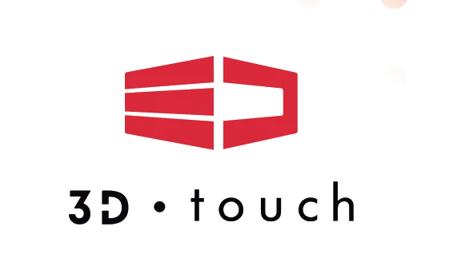
      <span class="sep" aria-hidden="true"></span>
      <span class="topbar__rotulo">Catálogo</span>
    </div>
    <nav class="brandnav" aria-label="Marcas">
      <a href="#snapmaker" style="--dot:var(--snap)">Snapmaker</a>
      <a href="#xtool" style="--dot:var(--xtool)">xTool</a>
      <a href="#bambulab" style="--dot:var(--bambu)">Bambu Lab</a>
    </nav>
  </div>
  <div class="topbar__rule" aria-hidden="true"></div>
</header>

<main>

  <!-- ======================= TOPO ======================= -->
  <section class="wrap hero">
    <p class="eyebrow">Catálogo de máquinas</p>
    <h1>As máquinas que a 3D Touch <em>representa no Brasil</em></h1>
    <p class="hero__lead">
      Dezessete máquinas, de três marcas. Corre o dedo pela lista, veja o que cada
      uma faz e fale com o time da 3D Touch para ver de perto.
    </p>
    <ul class="tally">
      <li>17 máquinas</li>
      <li>3 marcas</li>
      <li>Impressão 3D · laser · impressão UV e DTF</li>
    </ul>

    <div class="indice reveal">
      <p class="eyebrow">Índice</p>
      <h2>Toque para ir direto a uma máquina</h2>
      <ul class="indice__grid">
        <li><a href="#u1" style="--accent:var(--snap)">
          <span class="indice__marca">Snapmaker</span>
          <span class="indice__nome">U1</span>
          <span class="indice__melhor">Quatro cabeçotes e quase nenhuma purga</span>
        </a></li>
        <li><a href="#f2uv" style="--accent:var(--xtool)">
          <span class="indice__marca">xTool</span>
          <span class="indice__nome">F2 Ultra UV</span>
          <span class="indice__melhor">Vidro, cristal e plástico sem queimar nem derreter</span>
        </a></li>
        <li><a href="#f2u" style="--accent:var(--xtool)">
          <span class="indice__marca">xTool</span>
          <span class="indice__nome">F2 Ultra</span>
          <span class="indice__melhor">Metal colorido e corte de inox, em escala de produção</span>
        </a></li>
        <li><a href="#f2" style="--accent:var(--xtool)">
          <span class="indice__marca">xTool</span>
          <span class="indice__nome">F2</span>
          <span class="indice__melhor">Personalizar metal e madeira na hora, no balcão</span>
        </a></li>
        <li><a href="#o1" style="--accent:var(--xtool)">
          <span class="indice__marca">xTool</span>
          <span class="indice__nome">O1 Omni</span>
          <span class="indice__melhor">Imprimir em cores no objeto, no curvo ou na roupa</span>
        </a></li>
        <li><a href="#p3" style="--accent:var(--xtool)">
          <span class="indice__marca">xTool</span>
          <span class="indice__nome">P3</span>
          <span class="indice__melhor">Acrílico transparente e chapa de MDF, em ritmo industrial</span>
        </a></li>
        <li><a href="#m2" style="--accent:var(--xtool)">
          <span class="indice__marca">xTool</span>
          <span class="indice__nome">M2 Color Craft</span>
          <span class="indice__melhor">Imprimir em cores e cortar o contorno na mesma máquina</span>
        </a></li>
        <li><a href="#apparel" style="--accent:var(--xtool)">
          <span class="indice__marca">xTool</span>
          <span class="indice__nome">Apparel Printer</span>
          <span class="indice__melhor">Estampa de camiseta em volume, com branco em tecido escuro</span>
        </a></li>
        <li><a href="#p2s" style="--accent:var(--bambu)">
          <span class="indice__marca">Bambu Lab</span>
          <span class="indice__nome">P2S</span>
          <span class="indice__melhor">Impressão fechada, para filamento de engenharia</span>
        </a></li>
        <li><a href="#a2l" style="--accent:var(--bambu)">
          <span class="indice__marca">Bambu Lab</span>
          <span class="indice__nome">A2L</span>
          <span class="indice__melhor">A maior área de trabalho da linha A</span>
        </a></li>
        <li><a href="#bambu-linha" style="--accent:var(--bambu)">
          <span class="indice__marca">Bambu Lab</span>
          <span class="indice__nome">+ 7 modelos</span>
          <span class="indice__melhor">H2D, H2C, H2S, X2D, P1S, A1 e A1 mini</span>
        </a></li>
      </ul>
    </div>

    <div class="launch reveal">
      <div class="launch__txt">
        <span class="launch__badge">Lançamento</span>
        <h2>Chegou a nova O1 Omni da xTool</h2>
        <p>A impressora 4 em 1 da marca, que vai de estampa até molde — tinta UV em objeto rígido, transfer em superfície curva e estampa direto na roupa.</p>
        <a class="launch__go" href="#o1">Ver a O1 Omni →</a>
      </div>
      <div class="launch__img">
        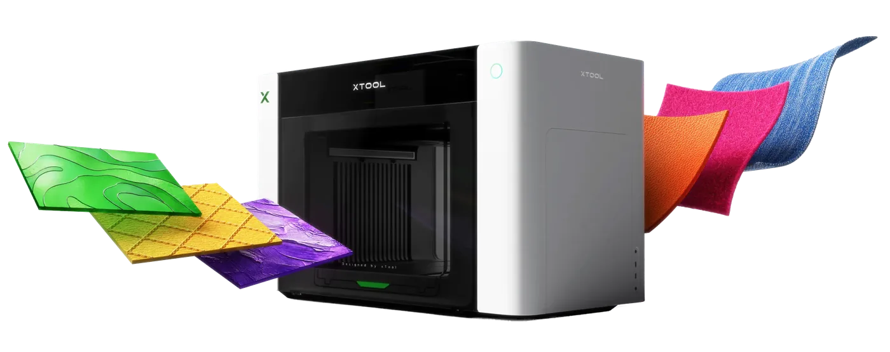
      </div>
    </div>
  </section>

  <!-- ======================= SNAPMAKER ======================= -->
  <section class="brand" id="snapmaker" style="--accent:var(--snap)">
    <div class="wrap">
      <div class="brand__rule" aria-hidden="true"></div>
      <div class="brand__head">
        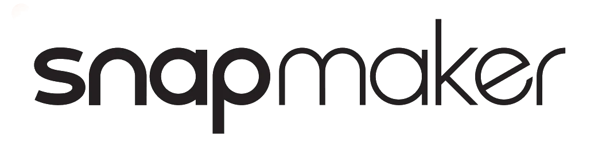
        <span class="brand__count">1 máquina</span>
      </div>
      <p class="brand__note">
        A Snapmaker entra na linha com a U1, a primeira da marca com troca de cabeçote —
        quatro cabeçotes independentes em vez de uma torre de purga.
      </p>

      <article class="machine" id="u1">
        <div class="machine__top">
          <div class="shot reveal">
            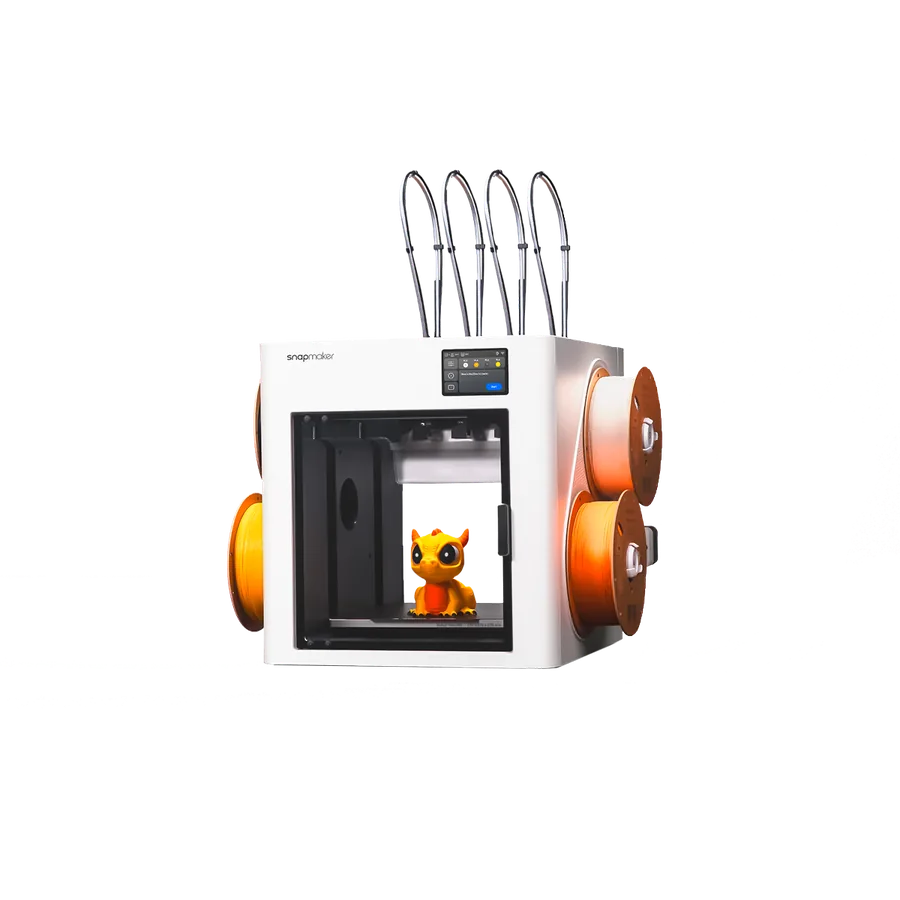
          </div>
          <div>
            <p class="line">Impressora 3D · 4 cabeçotes</p>
            <h2 class="nameplate">U1</h2>
            <p class="maker">Snapmaker</p>
            <p class="tagline">5× mais velocidade. 5× menos desperdício.</p>
            <p class="desc">
              Quatro cabeçotes independentes trocam de cor e de material em cinco segundos.
              Como cada cor tem o seu bico, quase não sobra purga — é daí que vem a conta
              de cinco vezes menos desperdício.
            </p>
            <ul class="numbers">
              <li><b>4</b> cabeçotes</li>
              <li><b>500</b> mm/s</li>
              <li>troca em <b>5</b> segundos</li>
              <li>SnapSwap</li>
            </ul>
          </div>
        </div>

        <div class="tiles reveal">
          <figure class="tile tile--wide">
            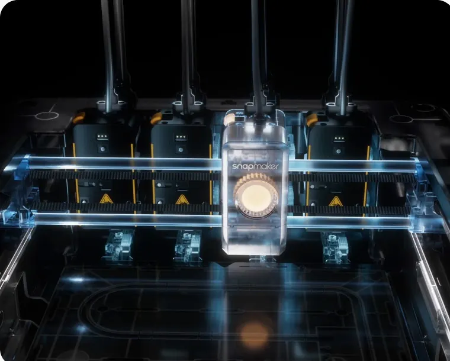
            <figcaption><b>SnapSwap</b>O cabeçote sai e entra sozinho no trilho.</figcaption>
          </figure>
          <figure class="tile">
            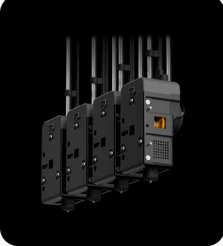
            <figcaption><b>4 cabeçotes</b>Um por cor ou por material.</figcaption>
          </figure>
          <figure class="tile">
            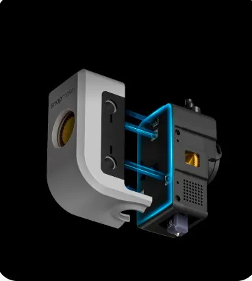
            <figcaption><b>Troca em 5 segundos</b>Sem parar a impressão para trocar filamento.</figcaption>
          </figure>
          <figure class="tile tile--wide">
            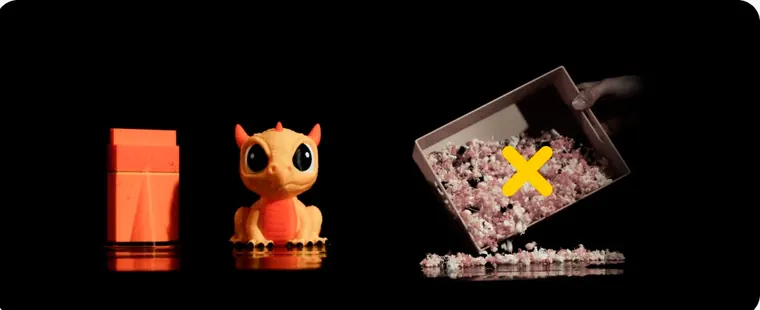
            <figcaption><b>Multi-material com mínima purga</b>A pilha de resíduo que a torre de purga produz praticamente some.</figcaption>
          </figure>
          <figure class="tile">
            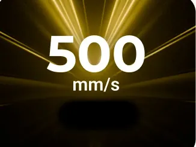
            <figcaption><b>500 mm/s</b>Velocidade de impressão.</figcaption>
          </figure>
          <figure class="tile">
            
            <figcaption><b>Monitoramento de I.A.</b>Acompanha a peça camada a camada.</figcaption>
          </figure>
          <figure class="tile">
            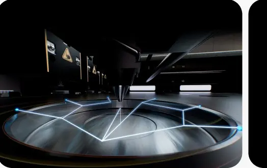
            <figcaption><b>Calibração inteligente</b>A máquina se acerta sozinha antes de começar.</figcaption>
          </figure>
          <figure class="tile">
            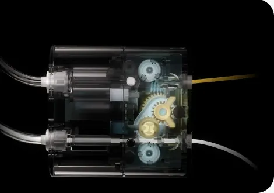
            <figcaption><b>Auto filamento</b>Carrega e descarrega o carretel sem a sua mão.</figcaption>
          </figure>
          <figure class="tile">
            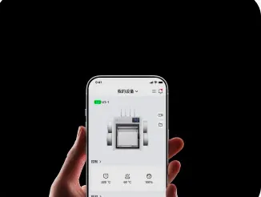
            <figcaption><b>App para controle</b>Manda imprimir e acompanha pelo celular.</figcaption>
          </figure>
        </div>

        <p class="balcao">Ficha técnica completa e condição de compra: fale com o time da 3D Touch.</p>
      </article>
    </div>
  </section>

  <!-- ======================= XTOOL ======================= -->
  <section class="brand" id="xtool" style="--accent:var(--xtool)">
    <div class="wrap">
      <div class="brand__rule" aria-hidden="true"></div>
      <div class="brand__head">
        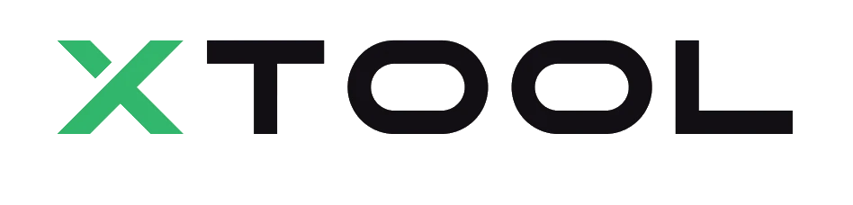
        <span class="brand__count">7 máquinas</span>
      </div>
      <p class="brand__note">
        A linha inteira da xTool, do laser que cabe embaixo do braço ao CO2 que corta
        chapa de MDF, passando pelas duas que imprimem em vez de gravar. Elas conversam
        entre si: o laser dá a forma, a O1 pinta.
      </p>

      <!-- F2 ULTRA UV -->
      <article class="machine" id="f2uv">
        <div class="machine__top">
          <div class="shot reveal">
            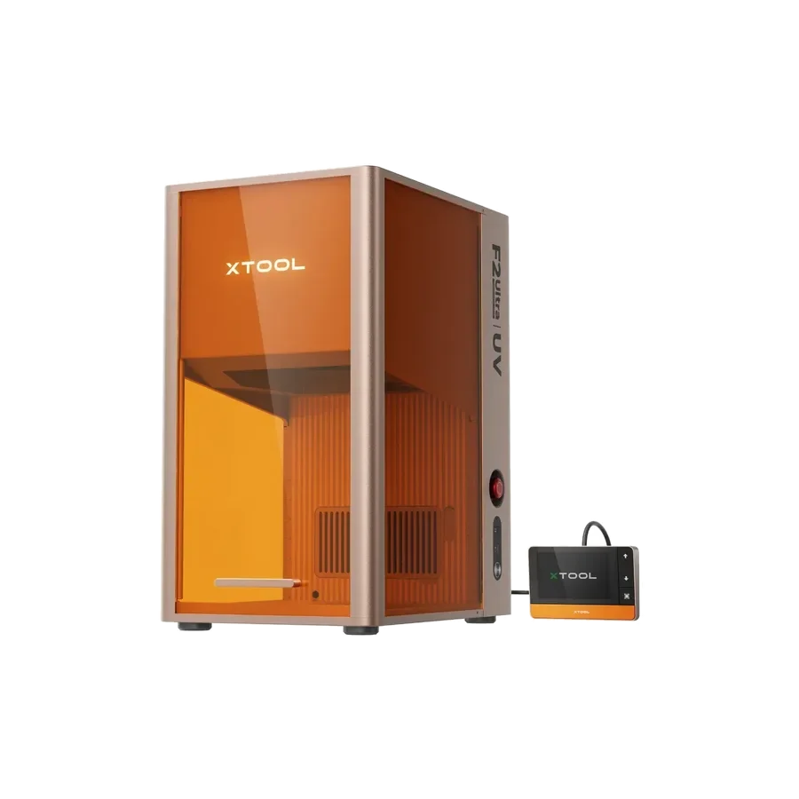
          </div>
          <div>
            <p class="line">Laser UV · 355 nm</p>
            <h2 class="nameplate nameplate--s">F2 Ultra UV</h2>
            <p class="maker">xTool</p>
            <p class="tagline">Grava vidro, cristal e plástico sem queimar nada.</p>
            <p class="desc">
              O laser UV desfaz a superfície em vez de queimar. O vidro sai com fosco limpo, o plástico não derrete, a madeira não amarela. E é o único que grava um desenho por dentro do cristal.
            </p>
            <ul class="numbers">
              <li>laser UV <b>355</b> nm</li>
              <li>ponto menor que <b>10</b> µm</li>
              <li>gravação <b>3D</b> dentro do cristal</li>
              <li>trabalha a frio</li>
            </ul>
          </div>
        </div>

        <div class="tiles tiles--mostra reveal">
          <figure class="tile">
            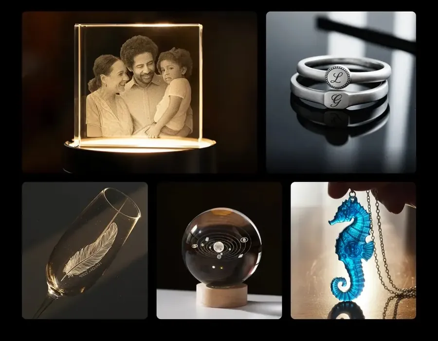
            <figcaption>Retrato em cristal, anel, taça: o presente premium.</figcaption>
          </figure>
          <figure class="tile">
            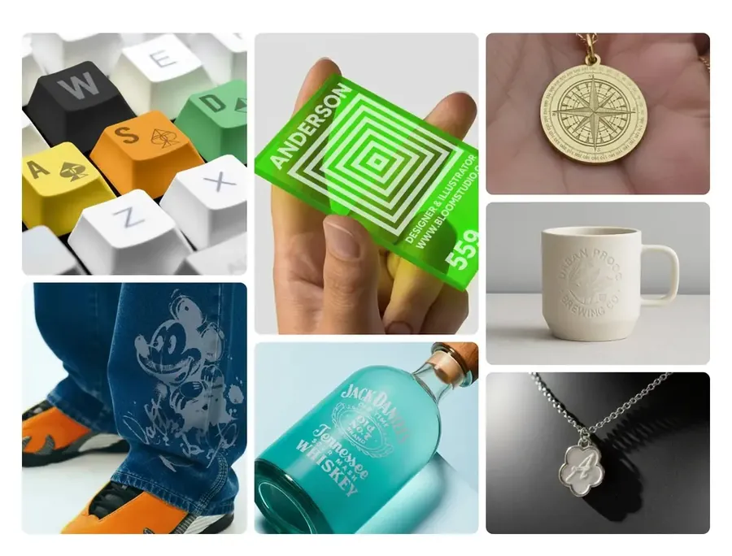
            <figcaption>Pega o que os outros lasers não pegam: plástico, garrafa, cerâmica.</figcaption>
          </figure>
        </div>

        <details class="ficha">
          <summary>Ficha rápida da F2 Ultra UV</summary>
          <div class="ficha__body">
            <table>
              <tbody>
                <tr><th scope="row">Laser</th><td>UV, 355 nm</td></tr>
                <tr><th scope="row">Potência</th><td>5 W</td></tr>
                <tr><th scope="row">Ponto do laser</th><td>menor que 10 µm</td></tr>
                <tr><th scope="row">Como trabalha</th><td>a frio, sem queimar</td></tr>
                <tr><th scope="row">Só ela faz</th><td>gravação 3D dentro do cristal</td></tr>
                <tr><th scope="row">Segurança</th><td>Classe 4</td></tr>
                <tr><th scope="row">Referência</th><td>3472</td></tr>
              </tbody>
            </table>
            <p class="ficha__list">
              <b>Materiais:</b> vidro, cristal K9, ABS, PVC, policarbonato, silicone, acrílico, madeira clara, couro, cerâmica, pedra, metal.
            </p>
            <p class="ficha__list">
              <b>Limites:</b> não corta — 5 W é marcação fina. Mesa pequena, para peça avulsa. É Classe 4: pede óculos de proteção.
            </p>
          </div>
        </details>
      </article>

      <!-- F2 ULTRA -->
      <article class="machine" id="f2u">
        <div class="machine__top">
          <div class="shot reveal">
            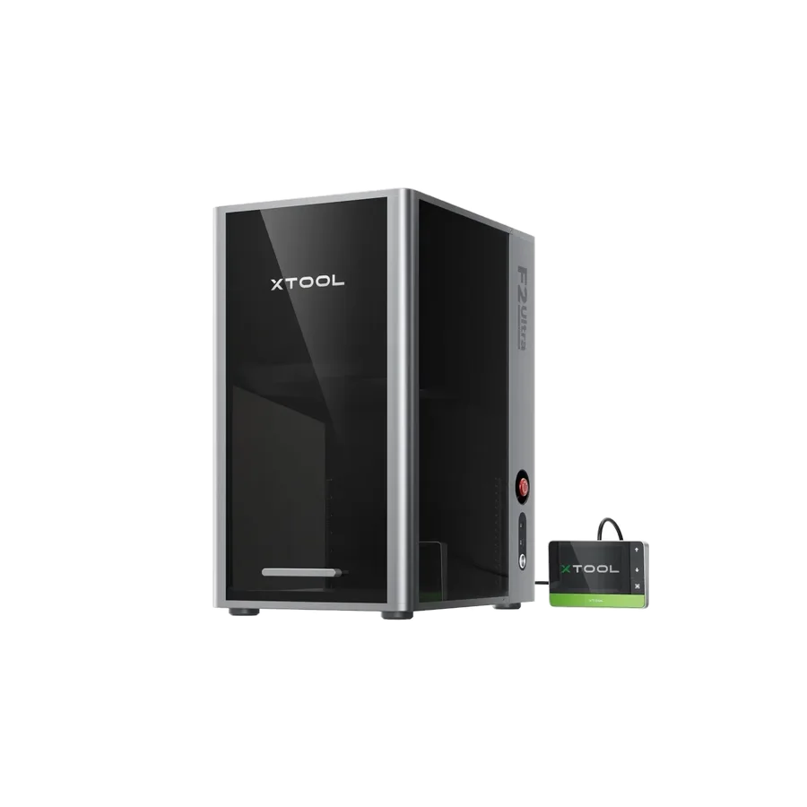
          </div>
          <div>
            <p class="line">Fibra MOPA + laser azul</p>
            <h2 class="nameplate nameplate--m">F2 Ultra</h2>
            <p class="maker">xTool</p>
            <p class="tagline">Mais de 100 cores no aço inox, sem uma gota de tinta.</p>
            <p class="desc">
              O laser MOPA forma uma película de óxido no metal, e a espessura dessa película define a cor — o mesmo efeito da poça de óleo no asfalto. Também grava fundo e corta inox de até 2 mm.
            </p>
            <ul class="numbers">
              <li><b>+100</b> cores no inox</li>
              <li>corte de <b>2</b> mm em inox</li>
              <li><b>15.000</b> mm/s</li>
              <li><b>60 W</b> MOPA + <b>40 W</b> azul</li>
            </ul>
          </div>
        </div>

        <div class="tiles tiles--mostra reveal">
          <figure class="tile">
            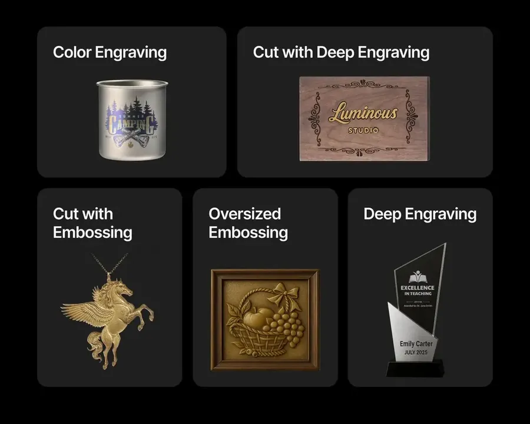
            <figcaption>Cor, relevo e gravação profunda — tudo em metal, sem tinta.</figcaption>
          </figure>
          <figure class="tile">
            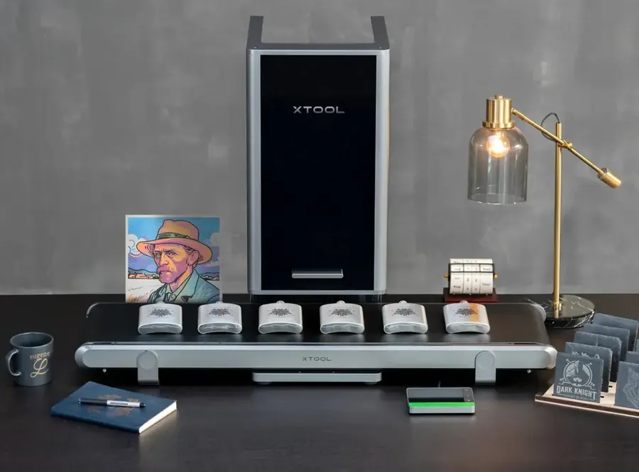
            <figcaption>Com a esteira, a mesa vira linha de produção.</figcaption>
          </figure>
        </div>

        <details class="ficha">
          <summary>Ficha rápida da F2 Ultra</summary>
          <div class="ficha__body">
            <table>
              <tbody>
                <tr><th scope="row">Mesa</th><td>220 × 220 mm</td></tr>
                <tr><th scope="row">Velocidade</th><td>até 15.000 mm/s</td></tr>
                <tr><th scope="row">Gravação colorida</th><td>mais de 100 cores em inox e titânio</td></tr>
                <tr><th scope="row">Corte em metal</th><td>inox até 2 mm</td></tr>
                <tr><th scope="row">Câmeras</th><td>duas, de 48 MP</td></tr>
                <tr><th scope="row">Segurança</th><td>Classe 4</td></tr>
                <tr><th scope="row">Referência</th><td>3451</td></tr>
              </tbody>
            </table>
            <p class="ficha__list">
              <b>Materiais:</b> aço inox, titânio, alumínio, cobre, latão, metal cromado, madeira, acrílico, couro, plástico.
            </p>
            <p class="ficha__list">
              <b>Limites:</b> é Classe 4: pede área reservada, exaustão e óculos. O corte de metal para em 2 mm de inox — não corta chapa.
            </p>
          </div>
        </details>
      </article>

      <article class="machine" id="f2">
        <div class="machine__top">
          <div class="shot reveal">
            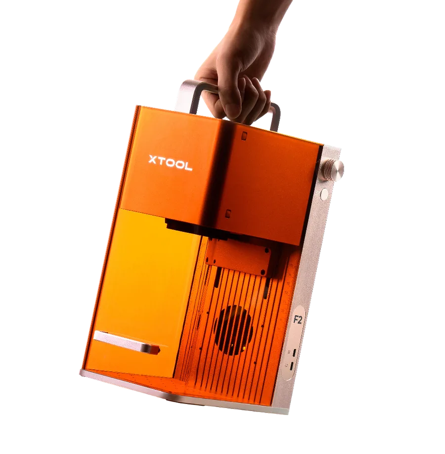
          </div>
          <div>
            <p class="line">Laser portátil · dois lasers</p>
            <h2 class="nameplate">F2</h2>
            <p class="maker">xTool</p>
            <p class="tagline">O melhor laser portátil para customização rápida no local.</p>
            <p class="desc">
              Dois lasers numa máquina que cabe embaixo do braço: o de fibra marca metal,
              o azul grava e corta madeira, acrílico, couro e tecido. A câmera mostra a peça
              na tela e você posiciona o desenho por cima dela.
            </p>
            <ul class="numbers">
              <li><b>15 W</b> diodo</li>
              <li><b>5 W</b> infravermelho</li>
              <li><b>6.000</b> mm/s</li>
              <li>câmera <b>50</b> MP</li>
              <li><b>+300</b> materiais</li>
            </ul>
          </div>
        </div>

        <div class="tiles reveal">
          <figure class="tile tile--contain">
            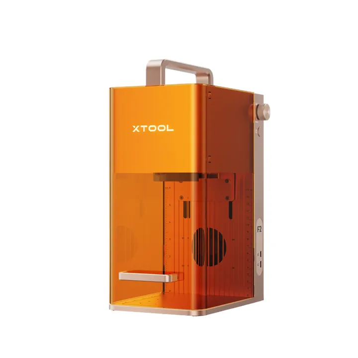
            <figcaption><b>O melhor laser portátil</b>15 W de diodo mais 5 W de infravermelho.</figcaption>
          </figure>
          <figure class="tile tile--contain">
            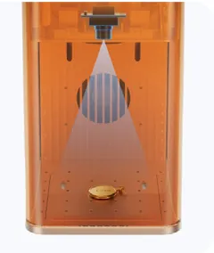
            <figcaption><b>Fácil</b>Câmera de 50 MP: você vê a peça e posiciona o desenho por cima.</figcaption>
          </figure>
          <figure class="tile tile--contain">
            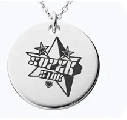
            <figcaption><b>Profundidade</b>Com o infravermelho de 5 W.</figcaption>
          </figure>
          <figure class="tile tile--contain">
            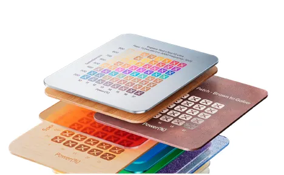
            <figcaption><b>+300 materiais</b>De metal e madeira a couro e tecido.</figcaption>
          </figure>
          <figure class="tile">
            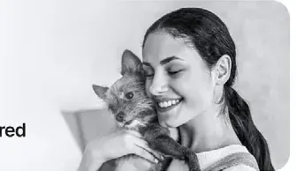
            <figcaption><b>Captura com detalhe</b>Gravação de foto em 8K.</figcaption>
          </figure>
          <figure class="tile tile--contain">
            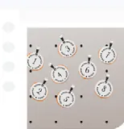
            <figcaption><b>Preenchimento com um clique</b>O padrão se ajusta sozinho à peça.</figcaption>
          </figure>
          <figure class="tile tile--contain">
            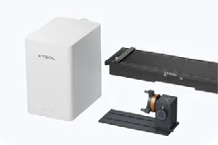
            <figcaption><b>Solução em acessórios</b>Extensão deslizante e purificador de fumaça de mesa.</figcaption>
          </figure>
        </div>

        <details class="ficha">
          <summary>Ficha rápida da F2</summary>
          <div class="ficha__body">
            <table>
              <tbody>
                <tr><th scope="row">Mesa</th><td>115 × 115 mm</td></tr>
                <tr><th scope="row">Com a extensão deslizante</th><td>115 × 400 mm</td></tr>
                <tr><th scope="row">Altura da peça</th><td>até 120 mm</td></tr>
                <tr><th scope="row">Velocidade</th><td>até 6.000 mm/s</td></tr>
                <tr><th scope="row">Câmera</th><td>50 MP, com foco automático</td></tr>
                <tr><th scope="row">Segurança</th><td>Classe 4 — pede óculos de proteção</td></tr>
                <tr><th scope="row">Programa</th><td>xTool Studio</td></tr>
                <tr><th scope="row">Referência</th><td>3471</td></tr>
              </tbody>
            </table>
            <p class="ficha__list">
              <b>Materiais:</b> aço inox, alumínio, alumínio anodizado, cobre, latão, titânio,
              ouro e prata, madeira, acrílico, couro, tecido.
            </p>
            <p class="ficha__list">
              <b>Limites:</b> mesa pequena — peça grande só com a extensão.
              Marca metal, mas não corta.
            </p>
          </div>
        </details>
      </article>
      <article class="machine" id="o1">
        <div class="machine__top">
          <div class="shot reveal">
            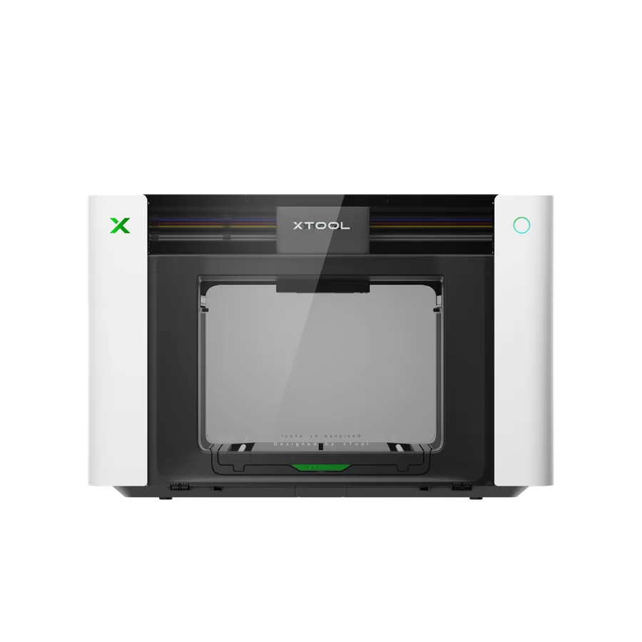
          </div>
          <div>
            <p class="line">Impressora 4 em 1 · sem laser · lançamento</p>
            <h2 class="nameplate">O1 Omni</h2>
            <p class="maker">xTool</p>
            <p class="tagline">A 4 em 1 que vai de estampa até molde.</p>
            <p class="desc">
              Imprime tinta UV direto sobre acrílico, madeira, vidro e metal; imprime transfer
              para superfície curva; e imprime em roupa. Faz relevo de até 7 mm, foil dourado
              e tinta que brilha no escuro.
            </p>
            <ul class="numbers">
              <li><b>4</b> em 1</li>
              <li><b>2</b> cabeçotes</li>
              <li>relevo até <b>7</b> mm</li>
              <li>mesa até <b>330 × 420</b> mm</li>
            </ul>
          </div>
        </div>

        <div class="tiles reveal">
          <figure class="tile tile--wide tile--strip">
            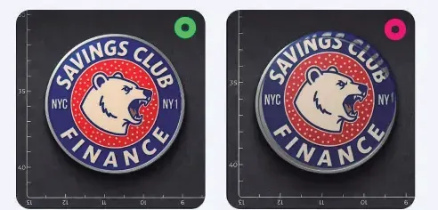
            <figcaption><b>Pixel-Scan</b>Primeiro sistema no mundo: lê a peça em 1:1, sem a distorção que a câmera cria.</figcaption>
          </figure>
          <figure class="tile">
            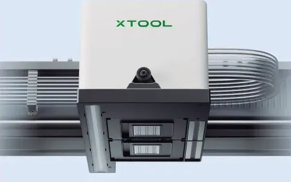
            <figcaption><b>Dois cabeçotes</b>Dois cabeçotes, infinitas capacidades.</figcaption>
          </figure>
          <figure class="tile tile--contain">
            
            <figcaption><b>Precisão de cores G7</b>A cor sai igual à da tela.</figcaption>
          </figure>
          <figure class="tile">
            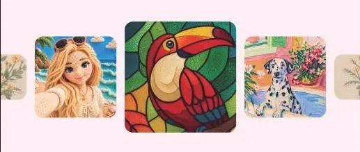
            <figcaption><b>I.A. generativa</b>Arte pronta com um clique.</figcaption>
          </figure>
          <figure class="tile">
            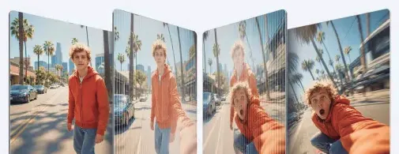
            <figcaption><b>Movimento lenticular</b>A imagem muda com o ângulo — em minutos.</figcaption>
          </figure>
          <figure class="tile">
            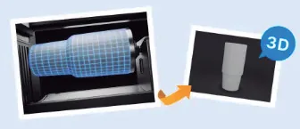
            <figcaption><b>Modelagem 3D de copo</b>Você vê a prévia antes de imprimir.</figcaption>
          </figure>
          <figure class="tile">
            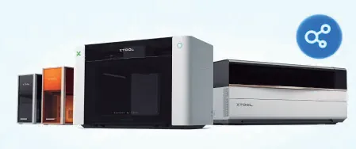
            <figcaption><b>Sinergia entre máquinas</b>Dê formato com o laser. Pinte com a O1.</figcaption>
          </figure>
          <figure class="tile tile--wide">
            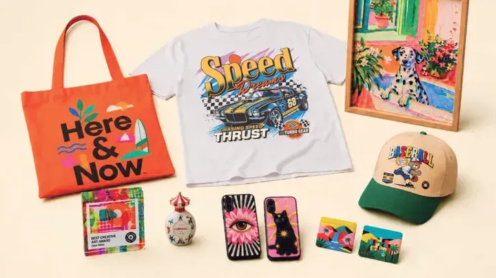
            <figcaption><b>Do têxtil ao rígido</b>Sacola, camiseta, quadro, boné, capinha — grave em tudo.</figcaption>
          </figure>
          <figure class="tile tile--wide tile--strip">
            
            <figcaption><b>Verificação de segurança da tinta</b>GREENGUARD ouro para a tinta UV, OEKO-TEX para a tinta DT, tinta livre de toxinas.</figcaption>
          </figure>
        </div>

        <details class="ficha">
          <summary>Ficha rápida da O1 Omni</summary>
          <div class="ficha__body">
            <table>
              <tbody>
                <tr><th scope="row">Mesa padrão</th><td>330 × 122 mm</td></tr>
                <tr><th scope="row">Mesa grande</th><td>330 × 420 mm</td></tr>
                <tr><th scope="row">Base para camiseta</th><td>300 × 390 mm</td></tr>
                <tr><th scope="row">Relevo</th><td>até 7 mm de altura</td></tr>
                <tr><th scope="row">Modos</th><td>tinta UV, transfer UV, direto no tecido e filme DTF</td></tr>
                <tr><th scope="row">Efeitos</th><td>relevo, mudança de ângulo, foil dourado, tinta que brilha</td></tr>
                <tr><th scope="row">Filtro</th><td>HEPA + carvão ativado</td></tr>
                <tr><th scope="row">Referência</th><td>3678</td></tr>
              </tbody>
            </table>
            <p class="ficha__list">
              <b>Materiais:</b> acrílico, madeira, vidro, metal, cerâmica, couro,
              algodão e poliéster, filme DTF.
            </p>
            <p class="ficha__list">
              <b>O que ela não faz:</b> ela imprime — não grava e não corta.
              A tinta UV e o canal do branco pedem manutenção de rotina.
            </p>
          </div>
        </details>
      </article>

      <!-- P3 -->
      <article class="machine" id="p3">
        <div class="machine__top">
          <div class="shot reveal">
            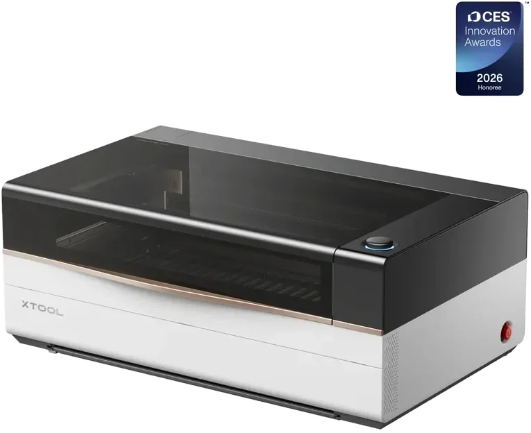
          </div>
          <div>
            <p class="line">Laser CO2 80 W · industrial</p>
            <h2 class="nameplate ">P3</h2>
            <p class="maker">xTool</p>
            <p class="tagline">Corta chapa inteira de MDF e acrílico grosso.</p>
            <p class="desc">
              CO2 de 80 W numa mesa onde cabe chapa inteira de MDF. Foco e altura automáticos, câmera da mesa toda e apagamento de incêndio embutido. Com o alimentador de esteira, roda produção contínua.
            </p>
            <ul class="numbers">
              <li><b>915 × 458</b> mm de mesa</li>
              <li><b>80 W</b> de CO2</li>
              <li><b>1.200</b> mm/s</li>
              <li>altura útil de <b>220</b> mm</li>
            </ul>
          </div>
        </div>

        <div class="tiles tiles--mostra reveal">
          <figure class="tile">
            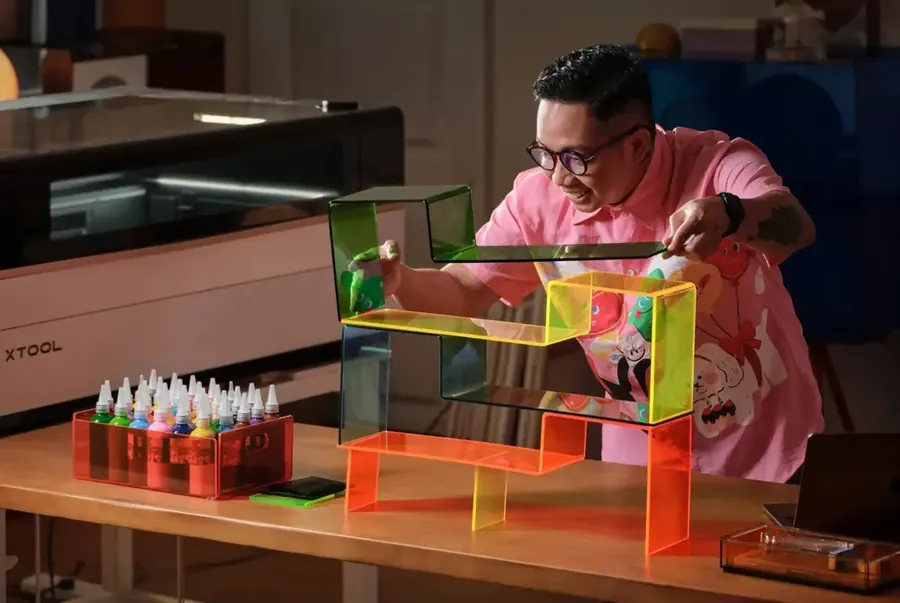
            <figcaption>Acrílico colorido em peça grande — o terreno do CO2.</figcaption>
          </figure>
          <figure class="tile">
            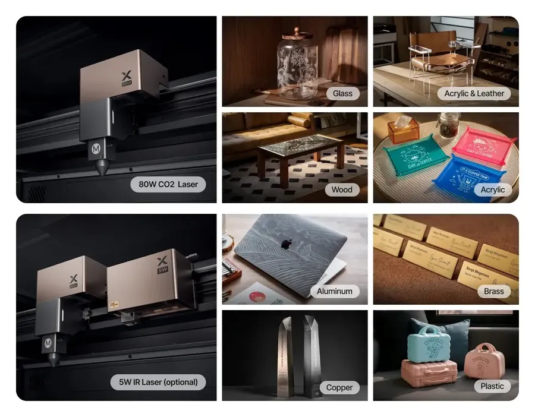
            <figcaption>Vidro, couro, madeira, acrílico, alumínio, latão: o CO2 pega quase tudo.</figcaption>
          </figure>
        </div>

        <details class="ficha">
          <summary>Ficha rápida da P3</summary>
          <div class="ficha__body">
            <table>
              <tbody>
                <tr><th scope="row">Laser</th><td>CO2, 10,6 µm</td></tr>
                <tr><th scope="row">Potência</th><td>80 W</td></tr>
                <tr><th scope="row">Mesa</th><td>915 × 458 mm</td></tr>
                <tr><th scope="row">Altura útil</th><td>220 mm, com base motorizada</td></tr>
                <tr><th scope="row">Velocidade</th><td>até 1.200 mm/s</td></tr>
                <tr><th scope="row">Vida do tubo</th><td>cerca de 10.000 h</td></tr>
                <tr><th scope="row">Foco</th><td>automático, por medição a laser</td></tr>
                <tr><th scope="row">Segurança</th><td>Classe 1 certificada, com apagamento de incêndio embutido</td></tr>
                <tr><th scope="row">Referência</th><td>3446</td></tr>
              </tbody>
            </table>
            <p class="ficha__list">
              <b>Materiais:</b> acrílico transparente e colorido, MDF em chapa, madeira, couro, tecido, papelão, borracha, vidro (marcação).
            </p>
            <p class="ficha__list">
              <b>Limites:</b> instalação de porte industrial: pede espaço, exaustão própria e ponto elétrico. Metal sem pintura só com o módulo de fibra.
            </p>
          </div>
        </details>
      </article>

      <!-- M2 COLOR CRAFT -->
      <article class="machine" id="m2">
        <div class="machine__top">
          <div class="shot reveal">
            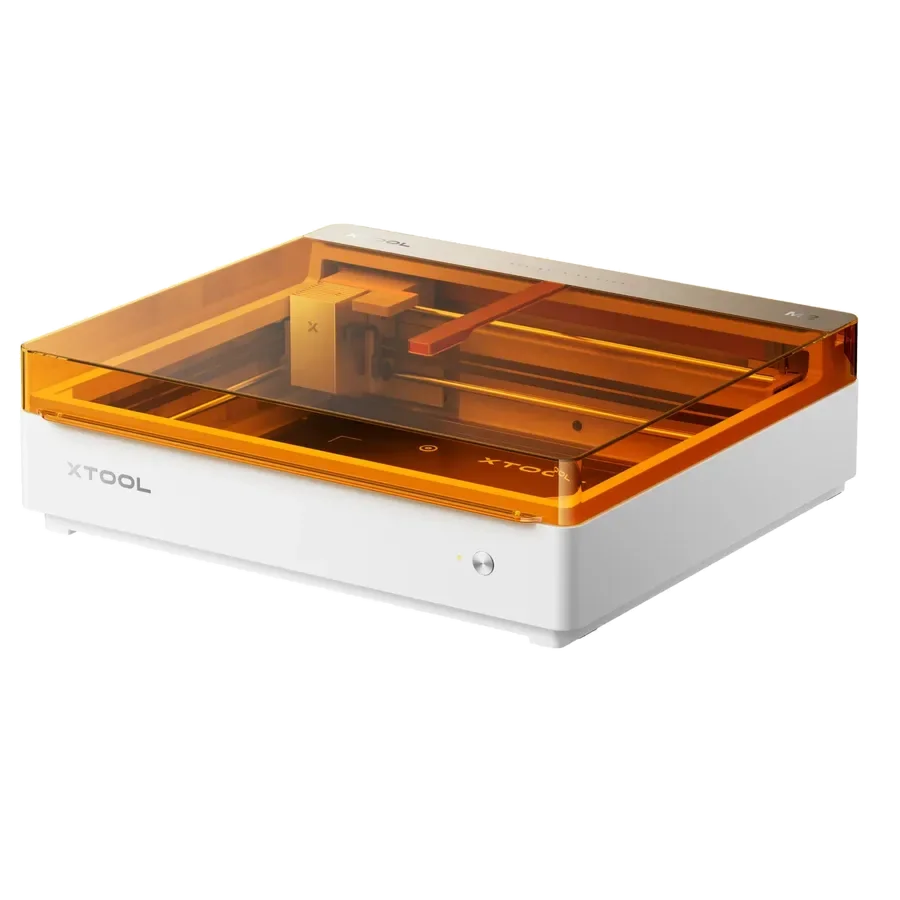
          </div>
          <div>
            <p class="line">Fechada · imprime em cores</p>
            <h2 class="nameplate nameplate--s">M2 Color Craft</h2>
            <p class="maker">xTool</p>
            <p class="tagline">Imprime em cores e corta o contorno na mesma mesa.</p>
            <p class="desc">
              Módulos trocáveis: laser azul para gravar e cortar, fibra para metal, e jato de tinta para imprimir em cores. Você imprime a arte e corta o contorno sem tirar a peça da máquina.
            </p>
            <ul class="numbers">
              <li>tinta <b>CMYK</b></li>
              <li><b>424 × 318</b> mm de mesa</li>
              <li>corte de até <b>10</b> mm</li>
              <li><b>+300</b> materiais</li>
            </ul>
          </div>
        </div>

        <div class="tiles tiles--mostra reveal">
          <figure class="tile">
            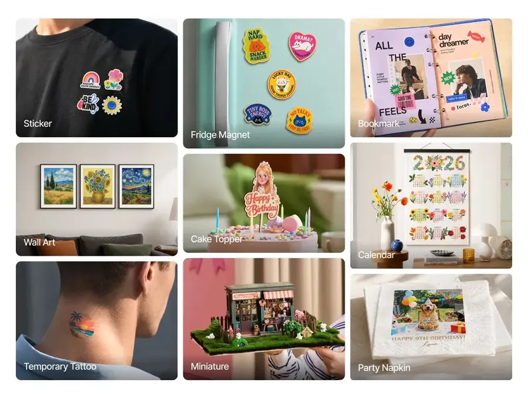
            <figcaption>Adesivo, ímã, quadro, topo de bolo: tudo colorido.</figcaption>
          </figure>
          <figure class="tile">
            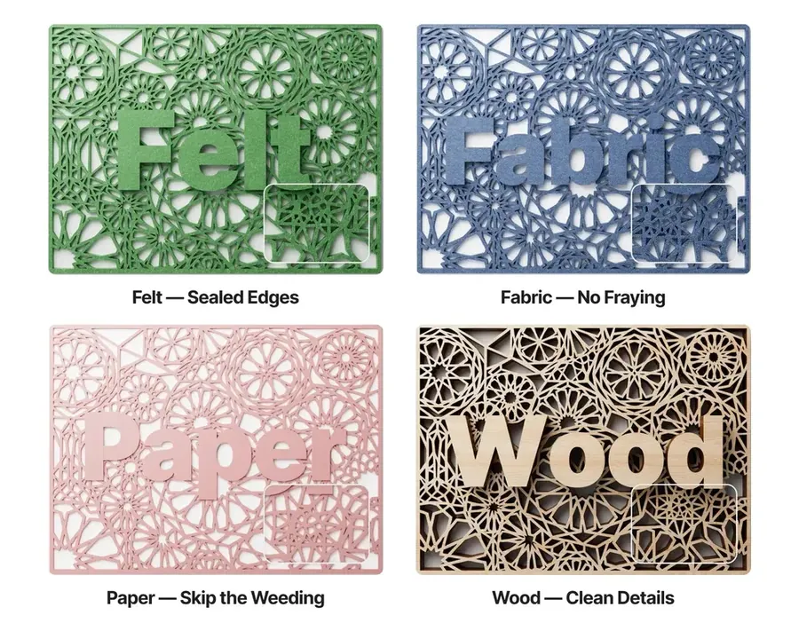
            <figcaption>Corte fino em feltro, tecido, papel e madeira.</figcaption>
          </figure>
        </div>

        <details class="ficha">
          <summary>Ficha rápida da M2 Color Craft</summary>
          <div class="ficha__body">
            <table>
              <tbody>
                <tr><th scope="row">Mesa (laser)</th><td>424 × 318 mm</td></tr>
                <tr><th scope="row">Área de impressão</th><td>391,5 × 290 mm</td></tr>
                <tr><th scope="row">Peça redonda</th><td>de 0 a 100 mm de diâmetro, sem elevador</td></tr>
                <tr><th scope="row">Tinta</th><td>CMYK, cartucho de 40 ml</td></tr>
                <tr><th scope="row">Corte — 10 W</th><td>até 8 mm de compensado</td></tr>
                <tr><th scope="row">Corte — 20 W</th><td>até 10 mm de compensado</td></tr>
                <tr><th scope="row">Segurança</th><td>Classe 1, fechada</td></tr>
                <tr><th scope="row">Referência</th><td>3674 / 3675</td></tr>
              </tbody>
            </table>
            <p class="ficha__list">
              <b>Materiais:</b> papel e cartonagem, feltro, tecido, couro, madeira e MDF, acrílico, metal (com o módulo de fibra), vidro pintado.
            </p>
            <p class="ficha__list">
              <b>Limites:</b> o laser azul não marca metal sem pintura — para metal, o módulo de fibra. Não corta metal nem acrílico transparente.
            </p>
          </div>
        </details>
      </article>

      <!-- APPAREL PRINTER -->
      <article class="machine" id="apparel">
        <div class="machine__top">
          <div class="shot reveal">
            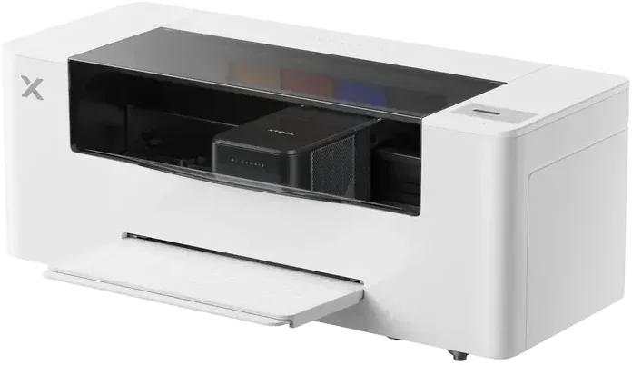
          </div>
          <div>
            <p class="line">DTF · confecção · sem laser</p>
            <h2 class="nameplate nameplate--s">Apparel Printer</h2>
            <p class="maker">xTool</p>
            <p class="tagline">Estampa de 35 cm pronta em cerca de dois minutos.</p>
            <p class="desc">
              Dois cabeçotes: um imprime a cor, o outro a base branca — é ela que faz a arte aparecer em tecido escuro. Dá conta de 4,6 m² por hora. A versão Plus cuida sozinha da limpeza do branco.
            </p>
            <ul class="numbers">
              <li><b>720 × 1800</b> DPI</li>
              <li><b>~2</b> min por estampa de 35 cm</li>
              <li><b>4,6</b> m² por hora</li>
              <li><b>2</b> cabeçotes</li>
            </ul>
          </div>
        </div>

        <div class="tiles tiles--mostra reveal">
          <figure class="tile">
            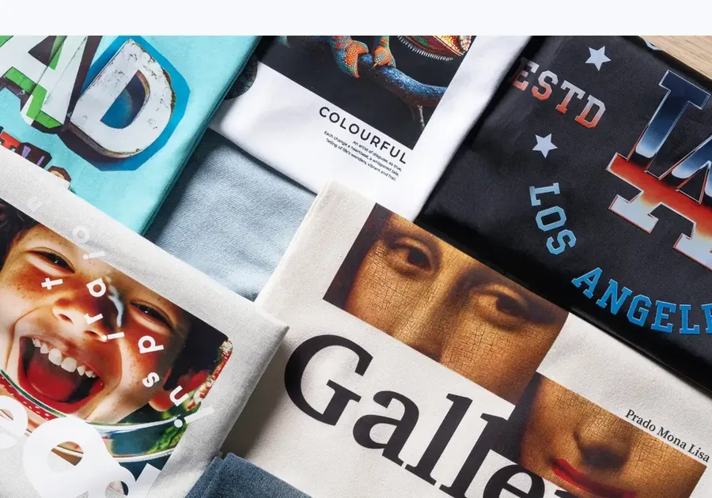
            <figcaption>Algodão, poliéster, jeans: cor cheia inclusive em tecido escuro.</figcaption>
          </figure>
          <figure class="tile">
            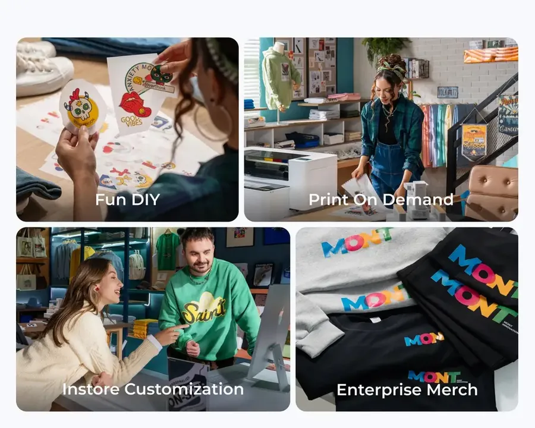
            <figcaption>Do artesanal ao uniforme de empresa.</figcaption>
          </figure>
        </div>

        <details class="ficha">
          <summary>Ficha rápida da Apparel Printer</summary>
          <div class="ficha__body">
            <table>
              <tbody>
                <tr><th scope="row">Resolução</th><td>720 × 1800 DPI</td></tr>
                <tr><th scope="row">Produção</th><td>até 4,6 m² por hora</td></tr>
                <tr><th scope="row">Tempo por estampa</th><td>35 cm em cerca de 2 min</td></tr>
                <tr><th scope="row">Cabeçotes</th><td>dois Epson I1600 — um de cor, um de branco</td></tr>
                <tr><th scope="row">Tinta branca</th><td>tanque de 1.000 ml</td></tr>
                <tr><th scope="row">Tintas de cor</th><td>500 ml cada</td></tr>
                <tr><th scope="row">Manutenção automática</th><td>na versão Plus</td></tr>
                <tr><th scope="row">Referência</th><td>pacote completo</td></tr>
              </tbody>
            </table>
            <p class="ficha__list">
              <b>Materiais:</b> algodão, poliéster, malha, moletom, tecido claro e escuro, filme DTF.
            </p>
            <p class="ficha__list">
              <b>Limites:</b> só tecido e transfer. A estampa sai em filme e precisa de prensa térmica, que é item separado.
            </p>
          </div>
        </details>
      </article>
    </div>
  </section>

  <!-- ======================= BAMBU LAB ======================= -->
  <section class="brand" id="bambulab" style="--accent:var(--bambu)">
    <div class="wrap">
      <div class="brand__rule" aria-hidden="true"></div>
      <div class="brand__head">
        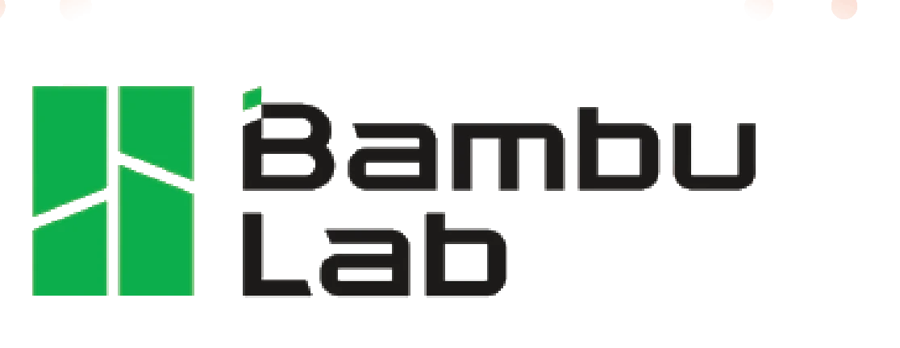
        <span class="brand__count">9 máquinas</span>
      </div>
      <p class="brand__note">
        Nove modelos da Bambu Lab, da A1 mini de entrada à H2D de extrusora dupla com laser.
        Abrimos com as duas de que temos material completo — a P2S fechada e a A2L de mesa
        móvel — e o resto da linha vem logo depois.
      </p>

      <!-- P2S -->
      <article class="machine" id="p2s">
        <div class="machine__top">
          <div class="shot reveal">
            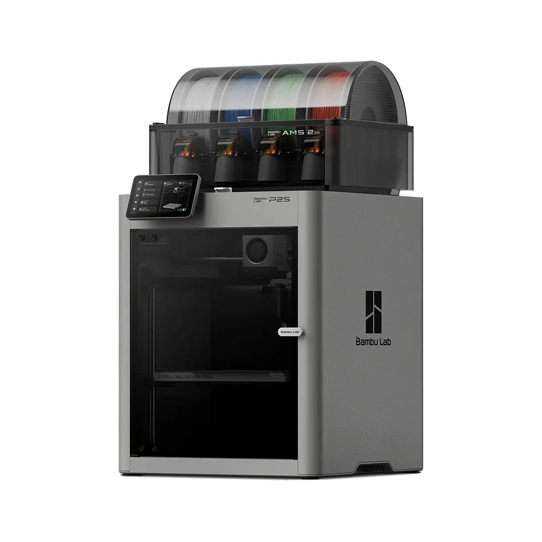
          </div>
          <div>
            <p class="line">Impressora 3D fechada · multimaterial</p>
            <h2 class="nameplate">P2S</h2>
            <p class="maker">Bambu Lab</p>
            <p class="tagline">O ícone redefinido.</p>
            <p class="desc">
              A caixa fechada da Bambu Lab, agora com touchscreen de cinco polegadas,
              servo extrusora PMSM e troca rápida de bico. Resfriamento por ar frio para o
              filamento comum, câmara fechada para o de engenharia, e a IA olhando a peça
              enquanto ela cresce.
            </p>
            <ul class="numbers">
              <li>touchscreen <b>5"</b></li>
              <li>servo extrusora <b>PMSM</b></li>
              <li>secagem de filamento</li>
              <li>detecção de erros por IA</li>
            </ul>
          </div>
        </div>

        <div class="tiles reveal">
          <figure class="tile tile--wide">
            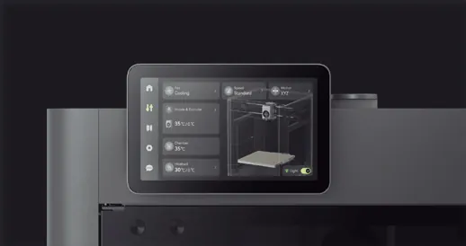
            <figcaption><b>Touchscreen de 5 polegadas</b>Toda a máquina na ponta do dedo.</figcaption>
          </figure>
          <figure class="tile">
            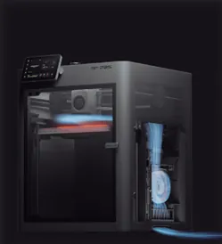
            <figcaption><b>Resfriamento por ar frio</b>Para o filamento comum sair limpo.</figcaption>
          </figure>
          <figure class="tile">
            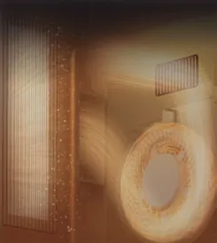
            <figcaption><b>Filamentos de engenharia</b>A câmara fechada segura a temperatura.</figcaption>
          </figure>
          <figure class="tile">
            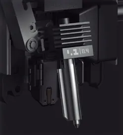
            <figcaption><b>Troca rápida de bico</b>Troca sem ferramenta.</figcaption>
          </figure>
          <figure class="tile tile--wide">
            
            <figcaption><b>Servo extrusora PMSM</b>Empurra o filamento com força medida.</figcaption>
          </figure>
          <figure class="tile">
            
            <figcaption><b>Liveview suave como seda</b>Você acompanha a impressão em vídeo.</figcaption>
          </figure>
          <figure class="tile">
            
            <figcaption><b>Calibração automática</b>Antes de cada peça, sozinha.</figcaption>
          </figure>
          <figure class="tile">
            
            <figcaption><b>Secagem de filamento</b>Ativa a secagem sem tirar o carretel.</figcaption>
          </figure>
          <figure class="tile tile--wide">
            
            <figcaption><b>Detecção de erros de IA</b>Vê a falha na mesa e avisa antes de estragar a peça.</figcaption>
          </figure>
        </div>

        <p class="eyebrow" style="margin-top:26px">O que sai dela</p>
        <div class="tiles reveal" style="margin-top:10px">
          <figure class="tile tile--wide">
            
            <figcaption><b>Carro de corrida SVF1</b></figcaption>
          </figure>
          <figure class="tile">
            
            <figcaption><b>Lâmpada</b></figcaption>
          </figure>
          <figure class="tile">
            
            <figcaption><b>Atirador de água Thirst Zapper</b></figcaption>
          </figure>
          <figure class="tile">
            
            <figcaption><b>Teclado Pietone</b></figcaption>
          </figure>
          <figure class="tile">
            
            <figcaption><b>Carro de corrida de fórmula 1</b></figcaption>
          </figure>
        </div>

        <p class="balcao">Ficha técnica completa e condição de compra: fale com o time da 3D Touch.</p>
      </article>

      <!-- A2L -->
      <article class="machine" id="a2l">
        <div class="machine__top">
          <div class="shot shot--wide reveal">
            
          </div>
          <div>
            <p class="line">Impressora 3D de mesa móvel</p>
            <h2 class="nameplate">A2L</h2>
            <p class="maker">Bambu Lab</p>
            <p class="tagline">Espaço criativo extra grande.</p>
            <p class="desc">
              A maior área de trabalho da linha A. Além de imprimir, ela troca o bico pela
              lâmina de corte para fazer decalque e pela caneta para desenhar — e o
              alinhamento da peça na mesa é feito pelo celular.
            </p>
            <ul class="numbers">
              <li>mesa extra grande</li>
              <li>corte de decalque</li>
              <li>desenho com caneta</li>
              <li>alinhamento por smartphone</li>
            </ul>
          </div>
        </div>

        <div class="tiles reveal">
          <figure class="tile tile--wide tile--strip">
            
            <figcaption><b>Espaço extra grande</b>A área de trabalho da A2L ao lado da A1.</figcaption>
          </figure>
          <figure class="tile tile--wide">
            
            <figcaption><b>Corte de decalque e desenho com caneta</b>Troque o bico pela lâmina ou pela caneta.</figcaption>
          </figure>
          <figure class="tile">
            
            <figcaption><b>Alinhamento por smartphone</b>Fotografe a mesa e posicione o desenho.</figcaption>
          </figure>
          <figure class="tile">
            
            <figcaption><b>Detector de aglomeração no bico</b>Percebe o acúmulo antes de virar bolha.</figcaption>
          </figure>
          <figure class="tile">
            
            <figcaption><b>Desgaste do filamento</b>Avisa quando o filamento está patinando.</figcaption>
          </figure>
          <figure class="tile">
            
            <figcaption><b>Impressão no ar</b>Detecta quando nada está saindo do bico.</figcaption>
          </figure>
        </div>

        <p class="balcao">Ficha técnica completa e condição de compra: fale com o time da 3D Touch.</p>
      </article>

      <section class="linha" id="bambu-linha">
        <p class="eyebrow">Linha completa</p>
        <h3>Os outros sete modelos da Bambu Lab</h3>
        <p class="linha__nota">
          Todos em linha na 3D Touch. Ficha técnica e condição de compra: fale com o time.
        </p>
        <ul class="linha__grid">
        <li><figure class="modelo">
          
          <figcaption class="modelo__txt">
            <span class="modelo__nome">H2D</span>
            <span class="modelo__desc">Extrusora dupla, com gravação a laser e corte digital na mesma plataforma.</span>
          </figcaption>
        </figure></li>
        <li><figure class="modelo">
          
          <figcaption class="modelo__txt">
            <span class="modelo__nome">H2C</span>
            <span class="modelo__desc">Sete hotends de troca inteligente, até 24 filamentos e pouca purga.</span>
          </figcaption>
        </figure></li>
        <li><figure class="modelo">
          
          <figcaption class="modelo__txt">
            <span class="modelo__nome">H2S</span>
            <span class="modelo__desc">Formato grande: 340 × 320 × 340 mm, a até 1.000 mm/s.</span>
          </figcaption>
        </figure></li>
        <li><figure class="modelo">
          
          <figcaption class="modelo__txt">
            <span class="modelo__nome">X2D</span>
            <span class="modelo__desc">Extrusora dupla com bico auxiliar, para tirar o suporte com facilidade.</span>
          </figcaption>
        </figure></li>
        <li><figure class="modelo">
          
          <figcaption class="modelo__txt">
            <span class="modelo__nome">P1S</span>
            <span class="modelo__desc">Fechada, com filtro de carvão — para filamento avançado e sem cheiro.</span>
          </figcaption>
        </figure></li>
        <li><figure class="modelo">
          
          <figcaption class="modelo__txt">
            <span class="modelo__nome">A1</span>
            <span class="modelo__desc">Com AMS lite: a porta de entrada para imprimir em várias cores.</span>
          </figcaption>
        </figure></li>
        <li><figure class="modelo">
          
          <figcaption class="modelo__txt">
            <span class="modelo__nome">A1 mini</span>
            <span class="modelo__desc">A menor da linha, com AMS lite e a velocidade de uma CoreXY.</span>
          </figcaption>
        </figure></li>
        </ul>
      </section>
    </div>
  </section>

  <!-- ======================= REVENDAS ======================= -->
  <div class="wrap">
    <section class="revendas reveal" id="revendas">
      <div class="revendas__txt">
        <p class="eyebrow">Onde comprar</p>
        <h2>Quer encontrar a revenda mais próxima a você?</h2>
        <p>O mapa da 3D Touch mostra quem vende e dá assistência no seu estado.</p>
        <a class="btn" href="https://3dtouch.com.br/revendedores" target="_blank" rel="noopener">
          Onde encontrar nossas revendas →
        </a>
      </div>
      <div class="revendas__img">
        
      </div>
    </section>
  </div>

  <div class="wrap foot">
    <div class="marks">
      
    </div>
    <p style="margin:0">Catálogo de máquinas · imagens e textos das marcas Snapmaker, xTool e Bambu Lab.</p>
  </div>

</main>

<script>
(function(){
  var reduce = window.matchMedia('(prefers-reduced-motion: reduce)').matches;

  /* revelação ao rolar */
  var alvos = document.querySelectorAll('.reveal');
  if (reduce || !('IntersectionObserver' in window)) {
    alvos.forEach(function(el){ el.classList.add('on'); });
  } else {
    var io = new IntersectionObserver(function(ents){
      ents.forEach(function(e){
        if (e.isIntersecting) { e.target.classList.add('on'); io.unobserve(e.target); }
      });
    }, { rootMargin: '0px 0px -8% 0px', threshold: 0.08 });
    alvos.forEach(function(el){ io.observe(el); });
  }

  /* marca no menu a seção que está na tela */
  var secoes = Array.prototype.slice.call(document.querySelectorAll('.brand'));
  var links = {};
  document.querySelectorAll('.brandnav a').forEach(function(a){
    links[a.getAttribute('href').slice(1)] = a;
  });
  function atualiza(){
    var meio = window.innerHeight * 0.35, atual = null;
    secoes.forEach(function(s){
      var r = s.getBoundingClientRect();
      if (r.top <= meio && r.bottom > meio) atual = s.id;
    });
    Object.keys(links).forEach(function(id){
      if (atual === id) links[id].setAttribute('aria-current','true');
      else links[id].removeAttribute('aria-current');
    });
  }
  var pendente = false;
  window.addEventListener('scroll', function(){
    if (pendente) return;
    pendente = true;
    requestAnimationFrame(function(){ atualiza(); pendente = false; });
  }, { passive: true });
  atualiza();
})();
</script>
